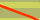

Legende
OpenStreetmap Schongebiete
(boundary=protected_area / protect_class=14)
Letzter Update:
 |
Ganzjähriges Befahrungsverbot für Skifahrer | |
 |
Monatsabhängiges oder saisonales Befahrungsverbot für Skifahrer | |
 |
Ganzjährige 'Bitte um Nichtbefahrung' für Skifahrer | |
 |
Monatsabhängige oder saisonale 'Bitte um Nichtbefahrung' für Skifahrer | |
 |
Ganzjähriges Skibefahrungsverbot der Fläche außerhalb der Wege (Wegegebot) | |
 |
Monatsabhängiges oder saisonales Skibefahrungsverbot der Fläche außerhalb der Wege (saisonales Wegegebot) | |
 |
Ganzjährige 'Bitte um Nichtbefahrung' der Fläche außerhalb der Wege | |
 |
Monatsabhängige oder saisonale 'Bitte um Nichtbefahrung' der Fläche außerhalb der Wege | |
| Gesamt eindeutig klassifiziert: | ||
| Mehrfach klassifiziert: | ||
| Unklassifiziert: | ||
| Tagging Warnungen: (eigener Layer) |
 |
Wege mit access:conditional tags |
 |
Wege ohne access:conditional tags |
Downloads
- Schongebiete.geojson: Alle weltweit gemappten Schongebiete, explizit klassifiziert nach Wiki-Defintion
classification tag = type1 - type8 - Schongebiete-ColorStyles.geojson:
Farb-Codes für https://geojson.io:
- Schongebiete.kml: ... im KML Format
- Schongebiete.osm: ... im OSM XML Format
Letzter Update:
© OpenStreepMap contributors